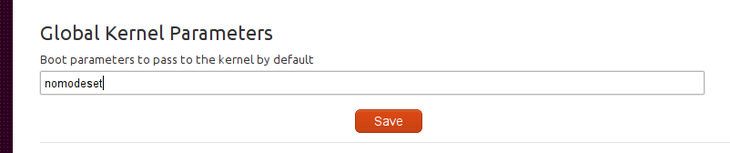

MAAS is able to send specific kernel options to booting nodes on both a global basis and a per-node basis.
As an admin, click on the gear icon at the top right and scroll down to the Global Kernel Parameters section, as shown here:

Whatever you set here is sent as-is to all booting nodes.
Per-node kernel options are set using tags. The easiest way of doing this is to use the maas command. You will need to be
logged in to the API first <api-key> and then you can add a tag which has its kernel_opts value set, like this:
$ maas maas tags new name='nomodeset' \
comment='nomodeset kernel option' kernel_opts='nomodeset vga'Once the tag is defined, you can add it to a node or nodes:
$ maas maas tag update-nodes nomodeset add=<system_id_1> \
add=<system_id_2>{% endblock %}note
Any per-node kernel options set will completely override the global options. If multiple tags attached to a node have the kernel_opts defined, the first one ordered by name is used.